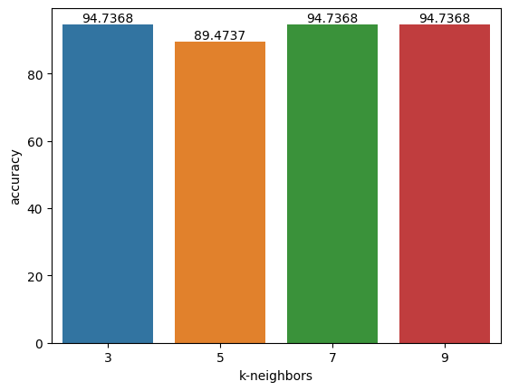
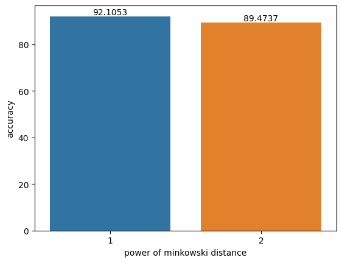
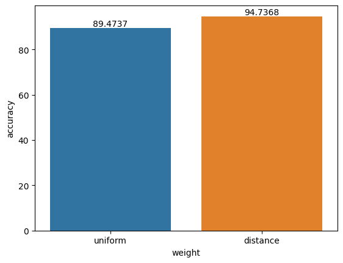

k-Nearest Neighbor
k-NN (k-Nearest Neighbors) adalah salah satu algoritma machine learning yang paling sederhana yang digunakan untuk melakukan klasifikasi atau regresi pada data.
Component of learning
k-NN tidak melibatkan proses pembelajaran seperti pada algoritma pembelajaran mesin lainnya. Sebaliknya, k-NN hanya menyimpan data training dan menggunakan data tersebut untuk melakukan prediksi pada data test. Oleh karena itu, k-NN sering dianggap sebagai algoritma lazy learning atau instance-based learning.
Hypothesis
Kumpulan dari tetangga terdekat
Hyperparameter:
-
Nilai k: Menentukan jumlah tetangga terdekat yang akan digunakan untuk melakukan klasifikasi atau regresi. Nilai k yang lebih besar cenderung menghasilkan keputusan yang lebih stabil, tetapi dapat mengabaikan perbedaan yang lebih kecil antara kelas atau nilai target.
-
Metrik jarak: Menentukan metode pengukuran jarak antara titik data. Beberapa metrik jarak yang umum digunakan adalah
euclidean distance,manhattan distance, danminkowski distance. Secara umum kita menggunakan rumus dariminkowski distancedi bawah. Apabila kita menggunakan m=2, artinya sama saja kita menggunakaneuclidean distance. Bila menggunakan m=1, artinya kita mengguanakanmanhattan distance.
- Bobot (weight): Menentukan apakah tetangga terdekat akan diberi bobot berdasarkan jarak mereka. Bobot yang umum digunakan adalah
uniformdandistance. Pada bobotuniformartinya kita memberlakukan sama semua tetangga. Sedangkan pada bobotdistance, semakin dekat jarak tetangga dengan titik yang diuji, maka semakin besar pengaruh tetangga tersebut. Kita akan menggunakan persamaan inverse squared distance by Tom Mitchell untuk menhgitung bobotdistancedengan persamaan sebagai berikut:
\( \begin{align*} w^{(i)} = \frac{1}{d(x^{(i)}, x^{(j)})^2} \tag{3} \end{align*} \)
Paramaters
Tidak ada, karena k-NN termasuk instance-based learning atau nonparametric method
Learning algorithm
Dalam k-NN, tidak ada model pembelajaran yang dihasilkan selama fase training. Oleh karena itu, k-NN tidak memiliki learning algorithm.
Pseudocode
Fitting model
Input:
- D: dataset training yang terdiri dari n titik data dengan m fitur dan label kelas atau nilai target
Output:
- model k-NN yang terdiri dari dataset training D
Proses:
Cari neighbors
Input:
- model: dataset training yang telah disimpan sebagai model k-NN
- x: titik data test yang akan diprediksi kelasnya
- k: jumlah tetangga terdekat yang akan digunakan untuk melakukan klasifikasi
- p: pangkat dari metrik jarak yang digunakan untuk menghitung jarak antara titik data
Output
- k-closest_point: daftar point tetangga terdekat denga titik x
- k-closest_distance: daftar jarak tetangga terdekat denga titik x
Proses:
initialize k-closest_point = []
initialize k-closest_distance = []
for i = 1, …, n in n-dimensional model:
current distance := d(x, x[i])
if current distance < k-closest_distance[-1]:
k-closest_distance[-1] = current distance
k-closest_point[-1] = x[i]
sort k-closest_distance, ascending order
sort k-closest_point, by k-closest_distance
Clasification
Input:
- model: dataset training yang telah disimpan sebagai model k-NN
- x: titik data test yang akan diprediksi kelasnya
- w: bobot dari setiap data
Output
- y_pred: kelas prediksi dari titik data uji x
Proses:
Regretion
Input:
- model: dataset training yang telah disimpan sebagai model k-NN
- x: titik data test yang akan diprediksi kelasnya
- w: bobot dari setiap data
Output
- y_pred: nilai target prediksi dari titik data uji x
Proses:
Implementasi
Simple Application
Import
from sklearn.datasets import load_iris
from sklearn.model_selection import train_test_split
from sklearn.neighbors import KNeighborsClassifier
import matplotlib.pyplot as plt
import seaborn as sns
import sys
sys.path.append('../../advanced_ml')
from ml_from_scratch.neighbors import KNeighborsClassifier as ScratchKNClassifier
Load data
Split data
Simple model
Accuracy
num_correct_pred = (y_pred == y_test).sum()
accuracy = (num_correct_pred / y_test.shape[0]) * 100
print('model accuracy: %.2f%%' % accuracy)
Experiment dengan hyperparameter
Hyperparameter k (jumlah tetangga terdekat)
ks = [3, 5, 7, 9]
k_accurations = []
for k in ks:
clf = ScratchKNClassifier(n_neighbors=k)
clf.fit(X_train, y_train)
y_pred = clf.predict(X_test)
num_correct_pred = (y_pred == y_test).sum()
accuracy = (num_correct_pred / y_test.shape[0]) * 100
k_accurations.append(accuracy)
ax = sns.barplot(x=ks, y=k_accurations)
ax.set(xlabel='k-neighbors', ylabel='accuracy')
ax.bar_label(ax.containers[0])
plt.show()

Hyperparameter p (power dari minkowski distance)
ps = [1, 2]
p_accurations = []
for p in ps:
clf = ScratchKNClassifier(p=p)
clf.fit(X_train, y_train)
y_pred = clf.predict(X_test)
num_correct_pred = (y_pred == y_test).sum()
accuracy = (num_correct_pred / y_test.shape[0]) * 100
p_accurations.append(accuracy)
ax = sns.barplot(x=ps, y=p_accurations)
ax.set(xlabel='power of minkowski distance', ylabel='accuracy')
ax.bar_label(ax.containers[0])
plt.show()

Hyperparameter weights
ws = ['uniform', 'distance']
w_accurations = []
for w in ws:
clf = ScratchKNClassifier(weights=w)
clf.fit(X_train, y_train)
y_pred = clf.predict(X_test)
num_correct_pred = (y_pred == y_test).sum()
accuracy = (num_correct_pred / y_test.shape[0]) * 100
w_accurations.append(accuracy)
ax = sns.barplot(x=ws, y=w_accurations)
ax.set(xlabel='weight', ylabel='accuracy')
ax.bar_label(ax.containers[0])
plt.show()

Membandingkan dengan library sklearn
Prediksi menggunakan sklearn model
sklearn_model = KNeighborsClassifier(n_neighbors=3, p=1, weights='distance')
sklearn_model.fit(X_train, y_train)
sklearn_pred = sklearn_model.predict(X_test)
sklearn_num_correct_pred = (sklearn_pred == y_test).sum()
sklearn_accuracy = (sklearn_num_correct_pred / y_test.shape[0]) * 100
Prediksi menggunakan scratch model
scratch_model = ScratchKNClassifier(n_neighbors=3, p=1, weights='distance')
scratch_model.fit(X_train, y_train)
scratch_pred = scratch_model.predict(X_test)
scratch_num_correct_predictions = (scratch_pred == y_test).sum()
scratch_accuracy = (scratch_num_correct_predictions / y_test.shape[0]) * 100
Bandingkan hasil
print('sklearn model accuracy: %.2f%%' % sklearn_accuracy)
print('scratch model accuracy: %.2f%%' % scratch_accuracy)
References
- Materi kelas Pacmann Advanced Machine Learning : Nearest Neighbor
- STAT 479: Machine Learning Lecture Notes